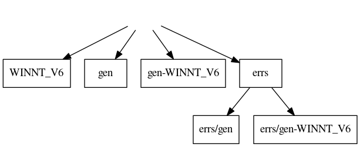

If you want to build some of the software manually, or you want to use an automated tool other than GNU make, you need to know how the software layout works.
When you install Prosody
TiNG, a directory TiNG is created and
within that there are subdirectories containing the various parts of the
distribution. Each part is as self-contained as possible. None of the
Makefiles will build anything outside its own directory. Each directory
may contain the following:

include directive) an operating system specific
Makefile.inc from the operating system specific subdirectory.
Makefile.inc which
contains operating system specific rules. This makefile is not
intended to be used directly - only by being included from the main
Makefile.
x.c is C program code then
when it is compiled into x.o the object file is put into
one of these 'gen' directories.
gen/x.out then any errors, warnings, or other
commentary printed by the compiler will be put into
errs/gen/x.out. Similarly, when the file
gen-LINUX_V6/x.out is built, any build messages are put into
errs/gen-LINUX_V6/x.out.
Although GNU make has many powerful features, the Makefiles only use a few and are organised in a very regular manner to make them easy to understand. Each Makefile starts by defining symbols. Apart from a few which hold things like compiler options, most are lists of object files.
There is an extra complexity for WINNT because the same Makefile can
build using either the Microsoft compiler or gcc. To allow this, the
symbol for program prog is instead two symbols, one for
each compiler. One, defined as
LINK_OBJS, is for the Microsft compiler, and the
other, LINK_GCC_OBJS, is for gcc. A GNU make feature is
used to define the gcc one:
LINK_GCC_OBJS = $(subst .obj,.o,$(LINK_OBJS))
This subst directive replaces the string
".obj" with the string ".o".
In general, the syntax: $(subst X,Y,Z) means
string Z with all occurrences of X replaced
with Y.
In some Makefiles there are other similar pairs of symbols (usually
with one containing _MS_ and the other containing
_GCC_) which handle differences between the two ways of
building.
The first target is called all. It lists all the targets that
can be built.
At this point a target-specific Makefile.inc is
included, which will contain the next rules.
There is a rule describing how to build a file called
".exists". This is used to ensure that appropriate output
directories are always created before any rule tries to put any file
into them. Creation of the ".exists" file (which is
otherwise unused) creates the directory.
Next there is a section containing the dependency for each target and the link command used to build it.
Almost at the end there are any pattern-based rules. These use a GNU extension. A rule in the form:
target-list: target-pattern: source-pattern commands
matches each item in the target-list against the
target-pattern and specifies how to build it from the
files that match the source-pattern. For example:
gen/one.o gen/two.o gen/three.o: gen/%.o: %.c cc -c -o $@ $<
is equivalent to these three rules:
gen/one.o: one.c cc -c -o $@ $< gen/two.o: two.c cc -c -o $@ $< gen/three.o: three.c cc -c -o $@ $<
And finally there's a line:
include $(shell find gen-$(TiNGTARGET) -name \*.M)
which includes all the .M files of automatically generated
dependencies. When you build a file foo.o, the file
foo.M is also created which describes the files used to
build it. When a file is built by using gcc, the option
-MD is used to generate this information. On Windows NT,
if the Microsoft compiler is used then a perl script generates the
.M file as there is no suitable option to make the
compiler do it. Even gcc needs a helper perl script since for versions
before 3.0 the output is in the wrong format.
test and diag directories
These directories contain various programs, each of which has its own
directory. However, since the Makefiles for these programs have a lot in
common, they include two shared Makefile.inc files. One is
(relative to the program) in .. (i.e. in test
or diag itself), and the other is in a target-specific
directory, for example, ../LINUX_V6/Makefile.inc for Linux
32-bit.
These programs also generate parts of the Makefiles automatically from
files called objlist in the program directory and a
target-specific subdirectory. For example, the locplay
program has locplay/objlist and
locplay/LINUX_V6/objlist for Linux. These files provide a
very easy way to see which object files are required by a program.
They consist of lines with two columns, the first identifying where a
file comes from (e.g. a library name) and the second being the name
of the object file. These files are converted into a piece of
Makefile by the script libutil/obj2make.pl.